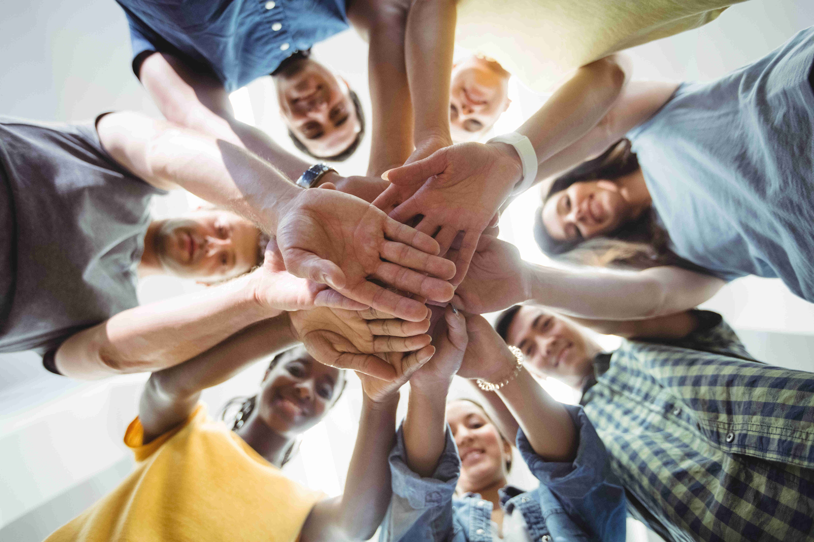
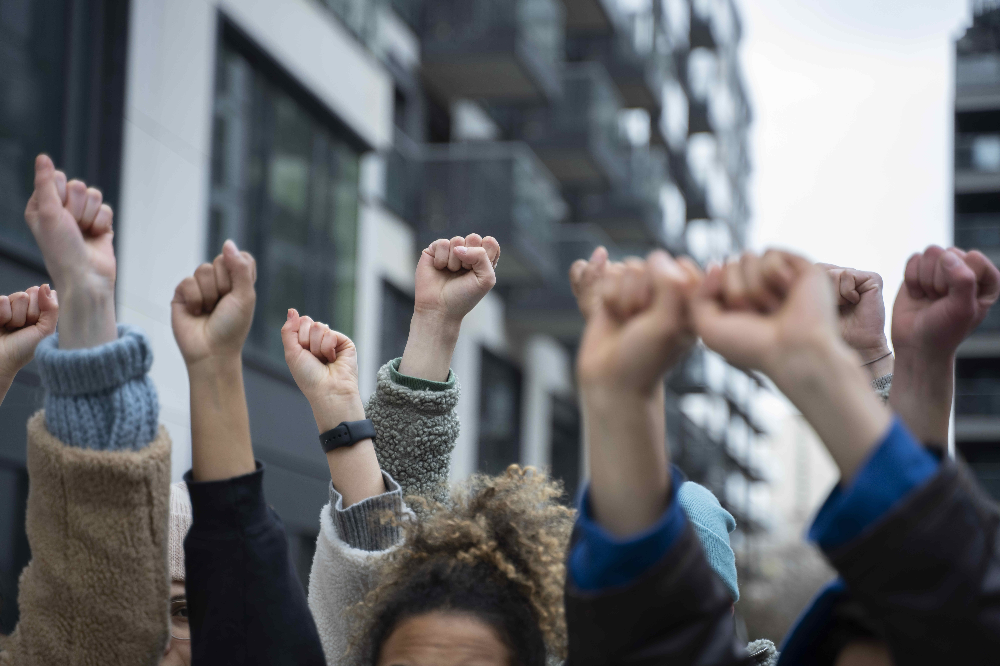

<div class="why">
    <div class="container m-auto pt-5 pb-5">
        <h2>Join us</h2>
        <h6 class="mb-1">Joining the AIIMS Rishikesh Student Welfare Association (ARSWA) provides students with several compelling reasons. Let's explore three key points that highlight the benefits of becoming a member.</h6>
        <div class="join-container d-flex col-lg-12 gap-2 flex-wrap">
            <div class="card-cont d-flex flex-column">
                
                <div class="contant">
                    <h4 class="text-center">Student Support</h4>
                    <p>ARSWA offers comprehensive assistance to students, encompassing their academic progress, extracurricular involvement, and mental well-being. By becoming a member of the association, students gain access to various resources and initiatives meticulously designed to enhance their overall growth. From study groups and academic workshops fostering learning opportunities to cultural events and sports tournaments promoting a well-rounded educational experience outside the confines of the classroom, ARSWA prioritizes holistic development.</p>
                </div>
            </div>
            <div class="card-cont d-flex flex-column">
                
                <div class="contant">
                    <h4 class="text-center">Community</h4>
                    <p>ARSWA fosters a sense of community among the students at AIIMS Rishikesh. By joining the association, students become part of a vibrant and inclusive community, where they can connect with peers who share similar interests and goals. The association organizes various social and cultural events, providing opportunities for networking, collaboration, and building lifelong friendships. Being a member of ARSWA also allows students to interact with seniors and alumni, who can offer guidance, mentorship, and valuable insights into their academic and professional journeys.</p>
                </div>
            </div>
            <div class="card-cont d-flex flex-column">
                
                <div class="contant">
                    <h4 class="text-center">Social Impact</h4>
                    <p>ARSWA actively engages in social welfare activities, enabling students to contribute to the betterment of society. By participating in the association's outreach programs, blood donation drives, and health camps, students can make a meaningful difference in the lives of others. These activities not only in still a sense of social responsibility but also provide a platform for students to develop leadership skills, empathy, and a broader perspective on healthcare and community service. Joining ARSWA offers an avenue to positively impact society while pursuing their medical education.</p>
                </div>
            </div>
        </div>
        <h6>joining the AIIMS Rishikesh Student Welfare Association offers students a supportive environment, diverse opportunities for personal growth, and a chance to make a difference in the community. By becoming a member of ARSWA, students can access holistic support, form meaningful connections, and actively contribute to their own well-being and that of others.</h6>
    </div>
</div>
